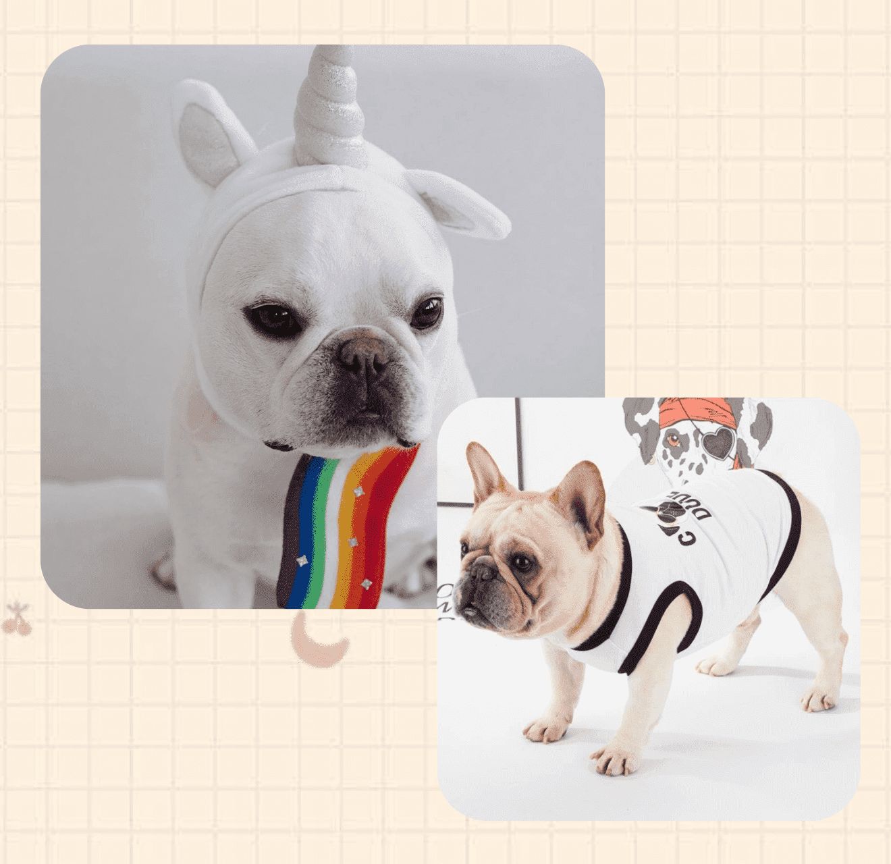

法國鬥牛犬
（英語：French Bulldog，法語：bouledogue français，別名bouledogue）
頭部：應是較大而呈正方形，頭蓋在兩耳間的部位比較平坦，兩眼間有凹陷。
腳部：前肢應是直而短，後肢應詩較強壯，長於前肢，腳部大小適中，趾和爪都較短。
尾巴：自然短尾，理想的長度應足夠覆蓋住肛門。尾根低，尾基部粗，短小，標準長度小於7.5厘米，扭曲成螺旋狀，稱為螺絲尾。
耳朵：雙耳位於頭部的較高位置，兩耳間距大，立耳。（又稱蝙蝠耳）
身體：骨骼非常的粗壯，肌肉比較的發達，胸部非常的寬深，肋部飽滿而且向上收，它的肩背比較寬短，腰非常的狹，臀彎曲而且腹部比較發達。
毛髮：被毛短細而平滑，柔軟而有光澤，毛色為略呈紅色的虎色、淡黃色或褐色，或有白底色的魔紋。

適合城市養
法國鬥牛犬很安靜，不會像其他小型犬那樣愛叫、正因為這個優點，所以法鬥是很適合城市飼養。
性格溫順
牠的性格非常溫順，對人很友善，特別喜歡和小孩子玩，容忍度很高，所以很多有小孩的家庭，都會選擇養一隻法鬥來陪伴孩子一起成長，培養孩子的愛心、責任心。
忠心
別看法斗是小型犬，它對主人是絕對的忠心，而且非常的護主，在面對侵犯具有寧死不屈的戰鬥精神！只要你不拋棄，它絕對會守護你一輩子！
適合拍照
無論什麼時候，360度無死角，可以隨便拍，牠怎麼拍都會有自己的freestyle。


不能頻繁洗澡
法鬥犬是體味比較嚴重的狗狗，需要定期的給它洗澡，但如果太頻繁，會把它們自身保護的油脂都洗掉，反而會加重牠們的搔癢、皮膚病的發生，所以洗澡次數不宜過多，建議每個月洗澡2次左右。
適當運動
要是長期把狗狗關起來，沒有機會曬太陽，就很容易導致狗狗鼻子掉色，掉毛嚴重等問題，所以每天應該帶狗狗運動1-2小時。
日常訓練
零食、足夠的玩具，小型犬運動也必須充足，訓練語言應簡短，獎勵多用語言盡量少用零食，糾正錯誤行為時語氣嚴厲、乾脆、高亢，表情嚴肅，最好站直高於小狗。
飲食注意
食物要新鮮，可加入新鮮蔬菜、肉類等，狗狗食物不要投餵。準備足夠、乾淨的飲用水和營養品。

髖關節形成不良症 Cannine Hip Dysplasia （CHD）
狗狗髖關節不正常發育或者是因為運動過度導致關節的異常，當髖關節鬆弛時會導致骨頭磨損，讓狗狗行動不便，
嚴重還會造成骨頭變形或脫臼，而預防這種疾病需要從小養護，在狗狗兩歲前別做太過度的運動
皮膚病
因為先天基因遺傳的因素，法鬥大部分有過敏體質，容易罹患毛囊炎、膿包、濕疹、黴菌等皮膚疾病，
可透過醫師檢測過敏原，讓毛孩在飲食與環境中避開，減少皮膚受到刺激而產生疾病或者加快痊癒喔！
第三眼瞼腺體脫出（prolapse of third eyelid gland）
又稱為櫻桃眼，會在眼睛內側部位有塊水腫突起，看起來白色又有點泛紅，
通常發生在兩歲以下的狗狗，只要經過麻醉與手術切除，通常可以痊癒。
呼吸道疾病
法鬥因為天生臉扁短吻，容易產生呼吸道的疾病，隨著年紀漸大症狀會越嚴重，常可聽見呼吸聲、打鼾聲，嚴重會導致吞嚥困難，但這類症狀可藉由醫師手術改善。